2023-05-15
To outline a methodology for developing a computational research skill instruction program centered in libraries that will support learners with diverse disciplinary and educational backgrounds.
Why are computational research skills important for everyone?
Wing, J (2006) Comm. ACM, 49 (3):33-35
Why are computational research skills important for everyone?
Grover, S and Pea, R (2012) Educational Researcher, 42 (1):38-43
Why are computational research skills important for everyone?
Grover, S and Pea, R (2012) Educational Researcher, 42 (1):38-43
Why are computational research skills important for everyone?
https://www.bls.gov/ooh/computer-and-information-technology/software-developers.htm#tab-6
Why are computational research skills important for everyone?
https://www.bls.gov/ooh/computer-and-information-technology/software-developers.htm#tab-6
Where can computational research be applied in the humanities?
Text analysis for Literature Students
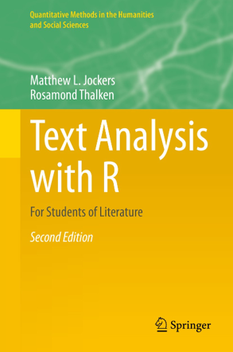
Jockers and Thalken (2020) Text Analysis with R for Students of Literature
Where can computational research be applied in the humanities?
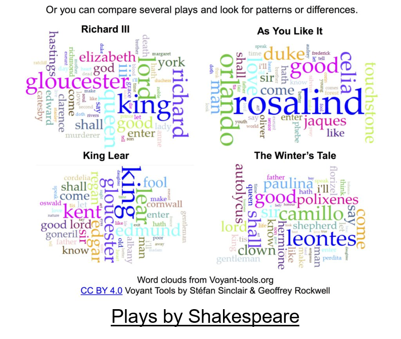
https://kennedyhq.com/wp/2016/11/19/shakespeare-through-digital-humanities-textual-analysis/
Where can computational research be applied in the humanities?
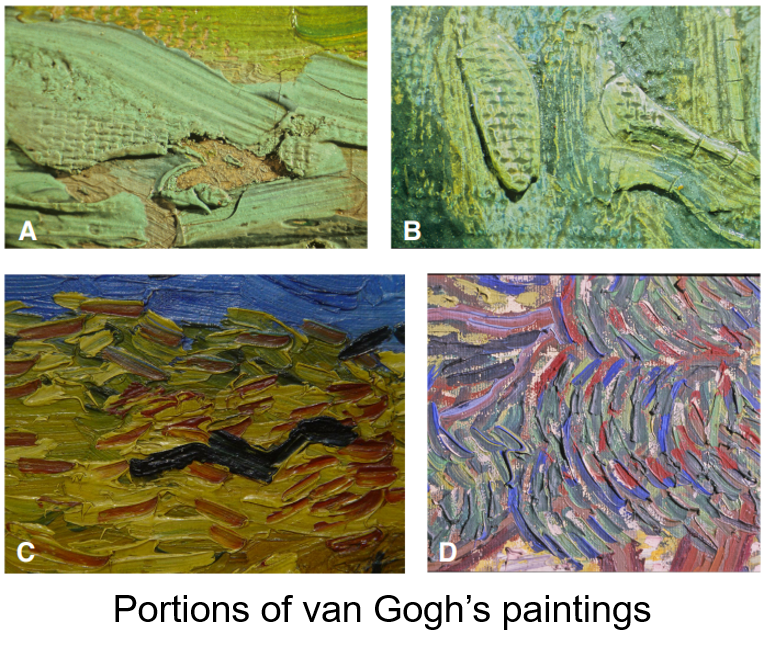
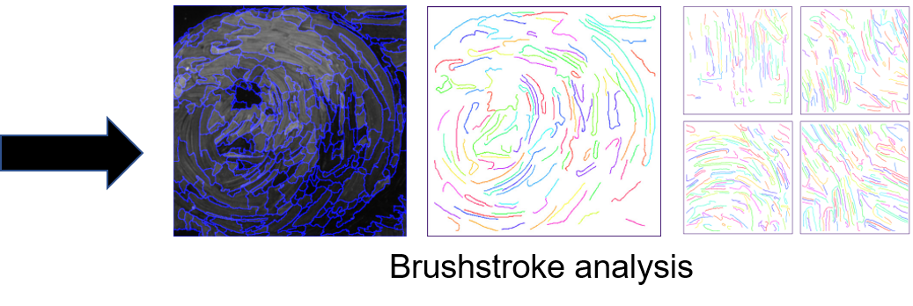
C. R. Johnson et al. (2008) IEEE Signal Processing Magazine, 25(4): 37-48
Where can computational research be applied in the humanities?
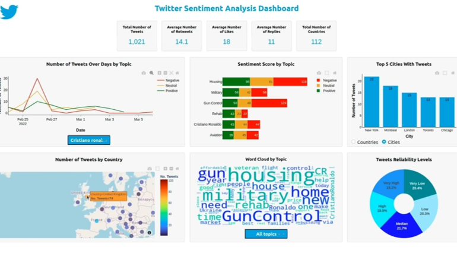
https://github.com/Mazen72/Twitter_Sentiment_Analysis_Dashboard
Where can computational research be applied in the humanities?
| Computational Research Skill | Humanities Research Field |
|---|---|
| Text Analysis | Ancient and Modern Languages |
| Data wrangling of census data | History and Political Science |
| Image processing | Art History and Film Studies |
Martyn Jessop (2004) Ubiquity, ACM
Where can computational research be applied in the humanities?
| Computational Research Skill | Humanities Research Field |
|---|---|
| Spatial data analysis | Geography |
| Audio analysis | Music |
Martyn Jessop (2004) Ubiquity, ACM
What computational research skills are important?
Recognize the diversity of needs
What activities should the instruction program focus on?
What activities should the instruction program focus on?
https://carpentries.org/
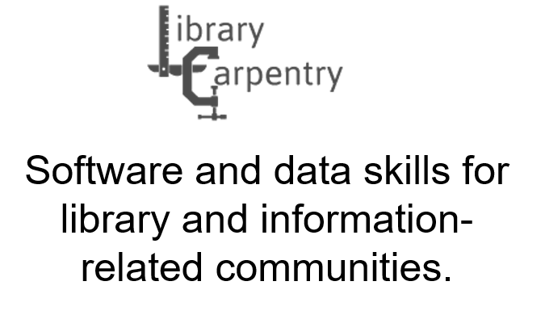
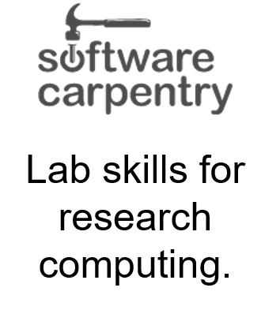
https://carpentries.org/
https://coderefinery.org/
https://forrt.org/
What should novice coders learn? (My personal opinion)
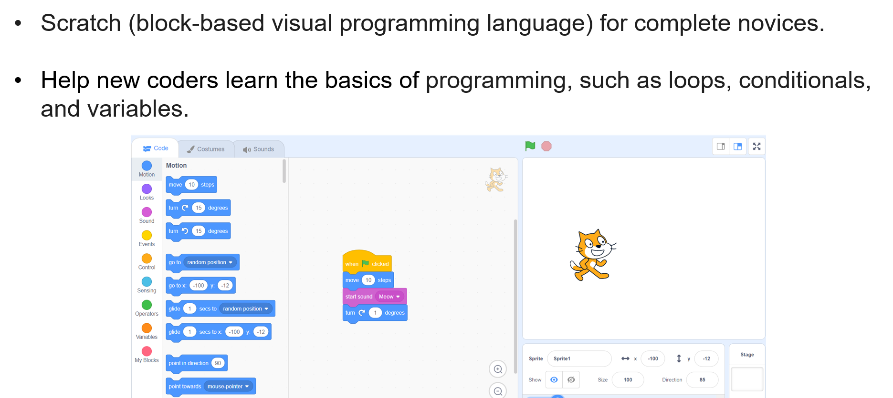
Scratch: https://scratch.mit.edu/
What should novice coders learn? (My personal opinion)
Key points for teaching novice coders
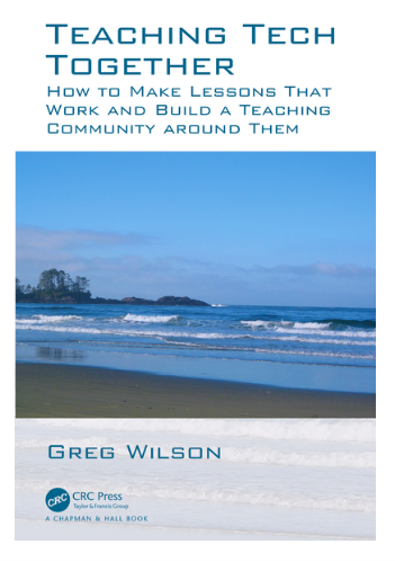
Key points for teaching novice coders
Key points for teaching novice coders
Data Manipulation in R
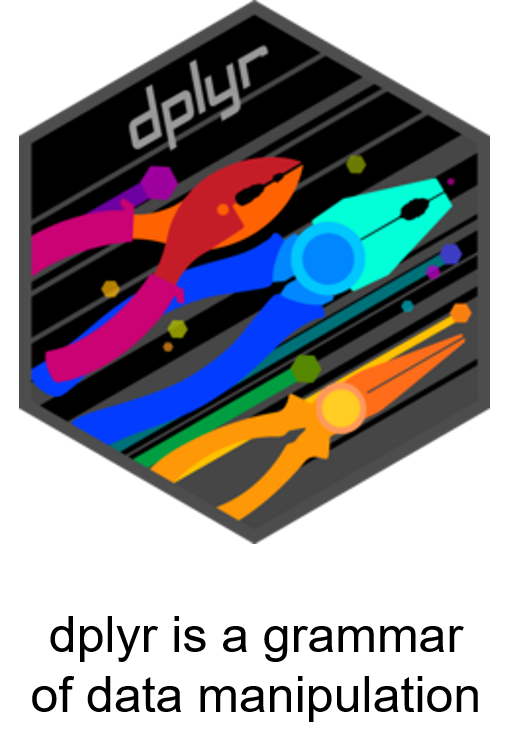
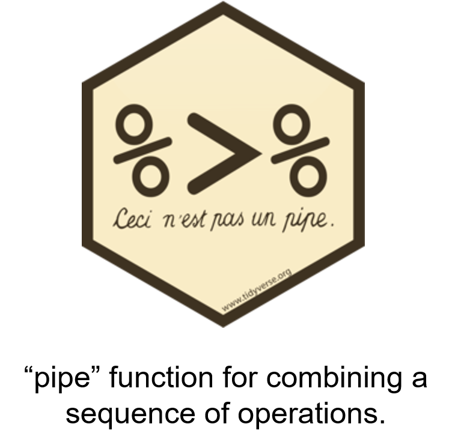
www.tidyverse.org
Data Manipulation in R
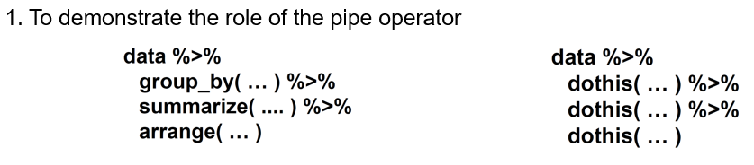 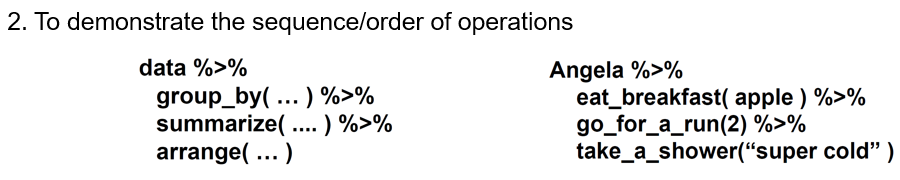
www.carpentries.org
Data Visualization in R
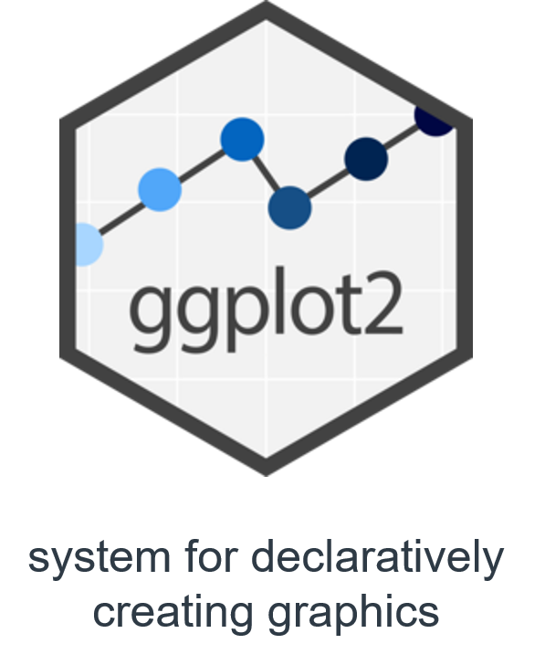 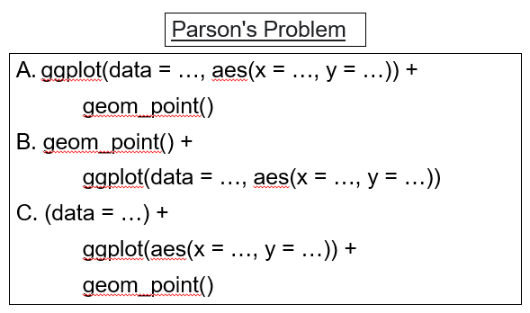
www.tidyverse.org
Barriers to overcome include:
What students should avoid: